←→ para moverte ·P pantalla completa rueda del ratón o clic en el índice
Unidad 2
Contenidos de la unidad
Diez apartados de teoría, tres prácticas y el examen. Los cuatro primeros son de conocer; el 2.5 es de calcular; del 2.7 en adelante, de entender cómo el sistema reparte la memoria, atiende a los dispositivos y guarda los archivos. Pulsa en cualquiera para ir directamente a él.
Qué es un proceso, en qué estado está y cómo decide el planificador quién usa la CPU: FIFO, SJF, SRTF, prioridades y Round Robin.
Criterio g
Describir la estructura del sistema de archivos
Archivos, directorios y árbol desde la raíz; cómo se reparte el disco en bloques y quién apunta dónde está cada cosa.
Criterio h
Distinguir los atributos de archivos y directorios
Nombre y extensión, tamaño y tamaño en disco, fechas, propietario, oculto, solo lectura.
Criterio i
Reconocer los permisos de archivos y directorios
Quién puede leer, escribir y ejecutar: la pestaña Seguridad de Windows y las letras rwx de Linux.
Criterio j
Valorar los sistemas de archivos transaccionales
Qué es el journaling, qué pasa si se va la luz y qué sistema de archivos elegir en cada caso.
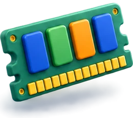
Criterio l
Describir la gestión de memoria
Protección, paginación y segmentación, fragmentación, intercambio y memoria virtual.
Criterio m
Distinguir cómo se controla la entrada/salida
Por programa, por interrupciones y por acceso directo a memoria; caché, buffer y spool.
Criterio n
Conocer los sistemas multiprocesador y distribuidos
Varios procesadores en un equipo y varios equipos que trabajan como uno.
Concepto clave
Sistema operativo
Conjunto de programas que se cargan al arrancar el ordenador y hacen de intermediario entre el hardware y los demás programas: gestionan los recursos y ocultan al usuario los detalles de la máquina.
Es software de base: sin él, el hardware no hace nada útil y ningún programa puede ejecutarse.
Sistema operativo. m. Inform. Programa o conjunto de programas que efectúan la gestión de los procesos básicos de un sistema informático, y permite la normal ejecución del resto de las operaciones. Real Academia Española, Diccionario de la lengua española, entrada sistema.
Concepto y funciones
Dónde está el sistema operativo
Entre el hardware y todo lo demás. Cada capa solo habla con la que tiene justo debajo:
●El usuario usa las aplicaciones (y a veces el propio sistema: el Explorador, la Configuración, la terminal).
●Las aplicaciones piden servicios al sistema operativo: abrir un archivo, dibujar una ventana, enviar por la red.
●El sistema operativo gobierna el hardware con los controladores (drivers) y reparte los recursos.
●El hardware ejecuta instrucciones y mueve bits: no sabe nada de ventanas ni de archivos.
Figura 2.1. El sistema operativo como capa intermedia. Elaboración propia.
Concepto y funciones
Las cinco funciones del sistema operativo
#
Función
Qué significa
Dónde lo ves cada día
1
Gestionar los recursos
Repartir procesador, memoria, disco y dispositivos entre todos los programas, de forma eficiente y sin que se estorben.
El Administrador de tareas: cuánta CPU y memoria usa cada programa.
2
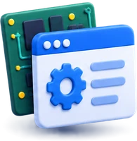
Ocultar el hardware
Ofrecer una interfaz para usar el equipo sin conocer sus particularidades: el mismo gesto funciona en cualquier PC.
Enchufas un pendrive y aparece una unidad; no importa la marca.
3
Ejecutar y controlar programas
Cargarlos en memoria, lanzarlos, darles turno de procesador y pararlos.
Doble clic en un icono; "el programa no responde"; Finalizar tarea.
4
Gestionar los archivos
Organizar la información en archivos y carpetas y controlar quién accede a qué.
El Explorador, Guardar como, la papelera, "acceso denegado".
5
Detectar y tratar errores
Avisar de lo que falla y, si puede, seguir funcionando sin arrastrar al resto.
"Se ha producido un error", la pantalla azul, el modo seguro.
Tabla 2.1. Las funciones principales de un sistema operativo. La primera es la más importante y ocupa la mayor parte de esta unidad: gestión de procesos (2.5), de memoria (2.7), de entrada/salida (2.8) y de archivos (2.9).
Pregunta a la clase
¿Hace algo más? Pensad en el móvil
Android e iOS son sistemas operativos. ¿Qué cosas hace vuestro móvil que no están en la tabla de las cinco funciones?
Lo que suele salir, y dónde encaja
Face ID, huella, PIN, permisos de cada app Seguridad: controlar quién accede a qué.
Batería, modo ahorro, apps en segundo plano Energía: reparto de recursos pensando en la batería.
Asistente de voz, notificaciones Interfaz: otra forma de ocultar el hardware (función 2).
Actualizaciones, tienda de aplicaciones Ejecutar y controlar programas (función 3): instalar, actualizar, aislar.
Copia en la nube, fotos, almacenamiento Gestión de archivos (función 4).
"La aplicación se ha cerrado" Tratamiento de errores (función 5): se cierra ella, no el móvil.
Todo encaja en las cinco funciones, pero hoy dos de ellas pesan más que nunca: la seguridad (sección 2.10) y la energía.
Concepto y funciones
Dos formas de usarlo: modo orden y modo gráfico
Windows 11 · Terminal
C:\Users\ana> dir /b Documentos
examen.docx fotos presupuesto.xlsx
C:\Users\ana> copy Documentos\examen.docx E:\
1 archivo(s) copiado(s).
Ubuntu · Terminal
ana@aula:~$ ls -l Documentos
-rw-r--r-- 1 ana ana 48120 sep 12 10:04 examen.docx
Se escriben órdenes. Hay que saberlas, pero se pueden guardar en un archivo y repetir, funcionan a distancia y no gastan recursos. Fue la primera interfaz: CP/M, MS-DOS, UNIX.
Documentos
Papelera
Documentos
examen.docx
fotos
presupuesto.xlsx
Abrir
Copiar
Cambiar nombre
Propiedades
Modo gráfico (GUI: ventanas, iconos, menús, puntero)
Se descubre mirando: no hay que memorizar nada. Llegó después (Macintosh 1984, Windows 1985) y las primeras versiones de Windows eran un programa que corría sobre MS-DOS.
Todos los sistemas actuales tienen las dos: en Windows 11, botón derecho en Inicio y Terminal; en Ubuntu, Ctrl + Alt + T. Maquetas de elaboración propia.
Comprueba lo aprendido
¿Cuál de estas NO es una función del sistema operativo?
Selecciona una opción.
Evolución histórica
Las cinco generaciones del sistema operativo
La historia del sistema operativo va unida a la del hardware: son las mismas generaciones que viste en la UT1.
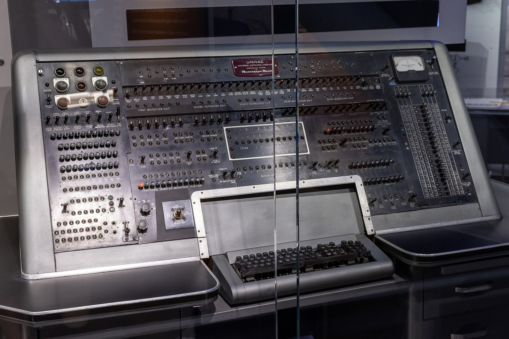
Consola del UNIVAC I (1951) en el Computer History Museum. Foto: The wub, Wikimedia Commons, CC BY-SA 4.0. Reducida.
1.ª · 1940-1955
Sin sistema operativo
Se programaba con interruptores y cables. Un operador cargaba cada trabajo a mano y, mientras, el ordenador esperaba.
Ordenadores: ENIAC, UNIVAC I
Tarjetas perforadas de un programa, con la tarjeta que abre el trabajo delante (Universidad Cornell, 1976). Foto: Jonathan Schilling, Wikimedia Commons, CC BY-SA 4.0. Reducida.
2.ª · 1955-1965
Procesamiento por lotes
Aparece el primer sistema operativo: un monitor que ejecuta los trabajos, en tarjetas perforadas, uno detrás de otro. Nace el tiempo compartido.
Figura 2.2. Las generaciones del sistema operativo, con un ordenador o un objeto de cada una. El autor y la licencia de cada foto aparecen al pasar el ratón.
Evolución histórica
Setenta años de sistemas operativos
Figura 2.3. Línea de tiempo de los sistemas operativos por familias, 1956-2026. Elaboración propia.
Evolución histórica
La familia Unix
Figura 2.4. Árbol simplificado de la familia Unix. Elaboración propia.
Sistema tipo Unix
Es un sistema que funciona como UNIX, con las mismas órdenes y la misma organización de archivos, aunque no lleve su código. MINIX y Linux se escribieron desde cero y son sistemas tipo Unix.
Sistemas actuales de la familia
FreeBSD
macOS e iOS
Linux
Android
Logotipos: marcas de sus propietarios, de Wikimedia Commons. El autor y la licencia de cada uno aparecen al pasar el ratón.
Evolución histórica
Linux y sus distribuciones
Distribución
Sistema operativo completo construido sobre el núcleo Linux. Reúne el núcleo, las herramientas GNU, un entorno de escritorio, un instalador y miles de programas listos para instalar. La prepara una comunidad o una empresa.
Hay cientos de distribuciones, pero casi todas derivan de unas pocas familias. Se diferencian en el escritorio, en la forma de instalar programas y en quién las mantiene. En este curso se usa Ubuntu, de la familia Debian.
Linus Torvalds en LinuxCon Europe, Düsseldorf, 2014. Foto: Krd (recorte de Sprat), Wikimedia Commons, CC BY-SA 4.0. Reducida.
Linus Torvalds escribió Linux en 1991 inspirándose en MINIX, el sistema de Tanenbaum con el que aprendía. Lo publicó con licencia libre: cualquiera puede usarlo, estudiarlo y modificarlo.
Logotipos: marcas de sus propietarios, de Wikimedia Commons. El autor y la licencia de cada uno aparecen al pasar el ratón.
Familia Debian
Debian
comunidad
→
Ubuntu
empresa Canonical
→
Linux Mint
comunidad
Familia Red Hat
Fedora
comunidad, gratuita
→
Red Hat Enterprise Linux
empresa, de pago
Arch Linux
comunidad; se instala pieza a pieza
Android
usa el núcleo Linux, pero no es una distribución
Evolución histórica
La familia Microsoft: de MS-DOS a Windows 11
Microsoft tuvo dos ramas. La rama DOS, para el ordenador de casa, empezó en modo texto y añadió Windows por encima. La rama NT se escribió desde cero para empresas. Windows XP unió las dos y, desde entonces, todos los Windows son NT.
Figura 2.5. Las dos ramas de Windows. Elaboración propia. Windows 10 dejó de recibir actualizaciones de seguridad el 14 de octubre de 2025.
Evolución histórica
La familia Apple
Apple fabrica a la vez el ordenador y su sistema operativo: macOS solo se instala en los ordenadores Mac.
1
Mac OS clásico (1984)
El sistema del primer Macintosh. Era gráfico desde el principio, pero un programa colgado podía bloquear todo el equipo.
2
NeXTSTEP (1989)
Sistema tipo Unix de NeXT, la empresa que fundó Steve Jobs al salir de Apple. Apple compró NeXT en 1997.
3
Mac OS X (2001), hoy macOS
Une la interfaz del Mac con la base Unix de NeXTSTEP. Desde 2016 se llama macOS.
4
iOS (2007), iPadOS, watchOS y tvOS
La misma base que macOS, adaptada al móvil, a la tableta, al reloj y a la televisión.
Marcas de Apple, de Wikimedia Commons. El autor y la licencia aparecen al pasar el ratón.
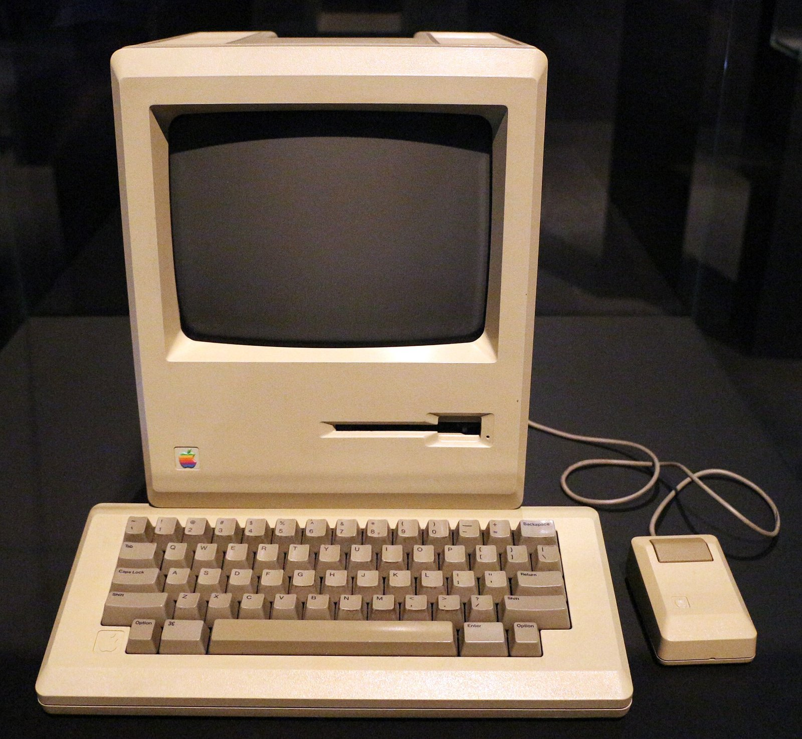
Apple Macintosh 128K (1984) del museo All About Apple, expuesto en Milán en 2016. Foto: Sailko, Wikimedia Commons, CC BY 3.0. Reducida.
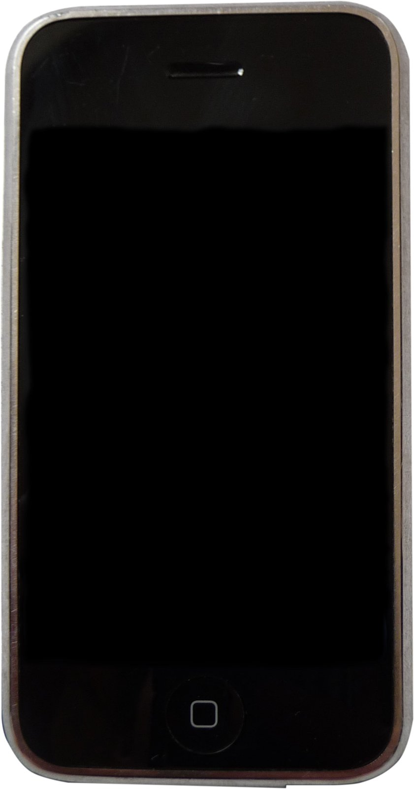
Primer iPhone (2007), modelo de 8 GB. Foto: Pavel Ševela (recorte de Dcoetzee), Wikimedia Commons, CC BY-SA 3.0. Reducida.
Evolución histórica
Versiones, ediciones y soporte
Concepto
Qué es
En Windows
En Ubuntu
Versión
Cada entrega nueva del sistema, con cambios importantes.
Windows 10, Windows 11.
Una cada seis meses, con el año y el mes: la 24.04 es de abril de 2024.
Actualización
Cambios dentro de una misma versión: parches de seguridad y mejoras.
Parches cada mes y una actualización de funciones al año (24H2, 25H2…).
Paquetes nuevos casi a diario y revisiones como la 24.04.3.
Edición
El mismo sistema con más o menos funciones, según para quién es.
Home, Pro, Education y Enterprise. Para servidores, Windows Server.
Desktop, con escritorio, y Server, sin entorno gráfico.
Soporte
Tiempo durante el que el fabricante publica parches de seguridad. Sin soporte, el sistema queda expuesto.
Cada actualización anual de Windows 11 tiene 24 meses en Home y Pro. Windows 10 lo perdió el 14 de octubre de 2025.
Las versiones LTS (abril de los años pares) tienen 5 años; las demás, 9 meses.
Para saber qué tienes: en Windows, Windows + R y winver; en Ubuntu, Configuración › Sistema › Acerca de, o la orden lsb_release -a.
Tabla 2.2. Versión, actualización, edición y soporte de un sistema operativo.
Evolución histórica
Los sistemas operativos de 2026
Dónde
Sistemas operativos
Detalle
Escritorio y portátil
Windows 11, macOS, Linux (Ubuntu, Fedora, Mint…), ChromeOS
Windows 10 dejó de tener soporte el 14 de octubre de 2025.
Móvil y tablet
Android, iOS e iPadOS
Android lleva dentro un núcleo Linux.
Servidores e internet
Linux (Ubuntu Server, RHEL, Debian), Windows Server, FreeBSD
La mayoría de los servidores web y de la nube usan Linux.
Embebidos (embedded) y tiempo real
FreeRTOS, Zephyr, QNX, VxWorks
Coches, electrodomésticos, robots, róveres de Marte.
Consolas y televisores
Sistema de PlayStation 5 (sobre FreeBSD), Nintendo Switch, Android TV, tvOS, webOS
Sistemas cerrados a medida del aparato.
Cuota en ordenadores de escritorio, agosto de 2026
Windows
62,7 %macOS
26,9 %Linux
8,9 %ChromeOS
1,5 %
En España: Windows 70,2 %, macOS 20,6 %, Linux 6,5 %, ChromeOS 2,7 %.
Fuente: StatCounter Global Stats, cuota mundial de sistemas operativos de escritorio, agosto de 2026. Estimación a partir de visitas a páginas web.
Tabla 2.3. Sistemas operativos actuales por tipo de dispositivo. Por número de aparatos, el sistema más extendido del mundo es Linux: está en Android, en la mayoría de los servidores, en routers, televisores y superordenadores.
Pregunta a la clase
¿Cuántos sistemas operativos hay ahora mismo en esta aula?
Contad todo lo que tenga un procesador y un programa dentro. No solo los ordenadores.
Lo que hay en un aula normal
PC del aula: Windows 11Móviles: Android e iOS, uno por personaRelojes y auriculares: sistemas embebidosPizarra digital: casi siempre AndroidRouter y puntos de acceso: LinuxImpresora: Linux o un sistema embebidoProyector, cámara: embebidos
Por número de aparatos, el sistema operativo más extendido del mundo es Linux: está dentro de Android, de la mayoría de los servidores de internet, de routers, televisores y superordenadores. Por ordenadores de escritorio, Windows.
Comprueba lo aprendido
¿Qué tienen en común Ubuntu y Android?
Selecciona una opción.
Tipos de sistemas operativos
Cinco criterios para clasificarlos
Los sistemas operativos se clasifican según cinco criterios. Un mismo sistema se clasifica por los cinco a la vez.
1Tiempo de respuesta: por lotes, interactivo o de tiempo real.
2Número de usuarios: monousuario o multiusuario.
3Número de procesos: monotarea o multitarea.
4Número de procesadores: monoproceso o multiproceso.
5Trabajo en red: centralizado, en red o distribuido.
Ejemplo: Windows 11 en tu ordenador
Tiempo de respuestaInteractivoUsuariosMonousuario: una persona a la vezProcesosMultitareaProcesadoresMultiproceso simétricoRedEn red
Al final del bloque, haz lo mismo con Android.
Tipos de sistemas operativos · criterio 1
Por tiempo de respuesta
Tipo
Qué es
Ejemplo
Por lotes
Los trabajos se ejecutan uno detrás de otro, sin que el usuario intervenga. El resultado se recoge después.
Una copia de seguridad que se hace sola de madrugada.
Interactivo
El usuario trabaja con el programa y ve la respuesta al momento. El procesador reparte su tiempo entre todos los programas.
Windows, macOS, Linux, Android: todo lo que usas.
Tiempo real
La respuesta tiene que llegar siempre dentro de un plazo. No es «muy rápido», es «nunca tarde».
El airbag y el ABS de un coche, un marcapasos.
Tabla 2.4. Clasificación por tiempo de respuesta.
Tipos de sistemas operativos · criterio 2
Por número de usuarios
Monousuario
Solo una persona trabaja con el equipo cada vez.
●Windows 11: tiene varias cuentas, pero solo una persona usa el escritorio a la vez.
●El móvil: lo usa una persona a la vez.
Multiusuario
Varias personas trabajan a la vez en el mismo equipo.
●Linux: veinte alumnos conectados a la vez al mismo servidor.
●Windows Server: varios escritorios a la vez, uno para cada persona.
Tener varias cuentas no basta: un sistema es multiusuario si varias personas pueden trabajar simultáneamente.
Tipos de sistemas operativos · criterio 3
Por número de procesos
Monotarea
Ejecuta un solo programa cada vez. Para usar otro, hay que cerrar el primero.
●MS-DOS.
●Aparatos sencillos, como un microondas.
Multitarea
Ejecuta varios programas a la vez. Se turnan en el procesador tan deprisa que parecen simultáneos. Hay dos formas:
●Cooperativa: cada programa soltaba el procesador cuando quería. Si uno se colgaba, se colgaba todo. Era la de los sistemas antiguos.
●Apropiativa o expulsiva: el sistema operativo le quita el procesador al programa. Si uno se cuelga, los demás siguen. Es la de todos los sistemas actuales.
El reparto del procesador entre los programas se llama planificación y se estudia en la sección 2.5.
Tipos de sistemas operativos · criterio 4
Por número de procesadores
Monoproceso
Solo sabe usar un procesador, aunque el equipo tenga más.
●Sistemas antiguos y aparatos sencillos.
Multiproceso
Usa varios procesadores o núcleos a la vez. Hay dos formas:
●Simétrico: cualquier tarea puede ir a cualquier núcleo libre. Lo son Windows, Linux, macOS y Android.
●Asimétrico: un procesador maestro reparte el trabajo a los demás. Era el de los sistemas antiguos.
En la UT1 miraste cuántos núcleos tiene tu procesador. Gracias al multiproceso, un juego, el navegador y una descarga no se estorban.
Tipos de sistemas operativos · criterio 5
Por trabajo en red
Tipo
Qué hace
Ejemplo
Centralizado
No comparte nada con otros equipos: trabaja aislado.
Un equipo sin red.
En red
Comparte carpetas e impresoras con otros equipos, y sabes que están en otro equipo.
La carpeta del servidor del aula.
Distribuido
Varios equipos trabajan juntos y parecen uno solo. Si cae una máquina, siguen las demás.
La nube: miles de servidores detrás de una sola dirección.
Multiproceso y distribuido reparten el trabajo de dos formas: uno dentro del equipo, entre sus núcleos, y otro por la red, entre varios equipos.
Tabla 2.5. Clasificación por trabajo en red.
Comprueba lo aprendido
Un marcapasos lleva un sistema operativo de tipo…
Selecciona una opción.
Estructura del sistema operativo
Las partes de un sistema operativo
Un sistema operativo no es un único programa. Está formado por varias partes que trabajan juntas; el núcleo es la central y las demás se apoyan en él.
Parte
Qué hace
En Windows
En Linux
Núcleo (kernel)
Es lo primero que se carga y está siempre en memoria. Reparte el procesador y la memoria y controla los archivos y los dispositivos.
El archivo ntoskrnl.exe
El núcleo Linux
Controladores (drivers)
Permiten al núcleo manejar cada dispositivo concreto: una tarjeta gráfica, una impresora, un ratón.
Se ven en el Administrador de dispositivos
Módulos del núcleo
Servicios
Programas del sistema sin ventana que arrancan solos y trabajan en segundo plano.
La cola de impresión, Windows Update (services.msc)
Los demonios, que arranca systemd
Interfaz de usuario
Lo que permite al usuario dar órdenes: el intérprete de órdenes (shell) y el entorno gráfico.
La Terminal (PowerShell) y el Explorador
bash y el escritorio GNOME
Utilidades
Programas que vienen con el sistema para configurarlo y mantenerlo.
Configuración, Administrador de tareas
El gestor de paquetes apt, el Monitor del sistema
Tabla 2.6. Las partes de un sistema operativo, con su ejemplo en Windows y en Linux.
Estructura del sistema operativo
Modo usuario, modo núcleo y llamadas al sistema
Para que un programa no pueda dañar al sistema ni a otros programas, el procesador trabaja en dos modos.
●Modo núcleo: se pueden ejecutar todas las instrucciones, también las que acceden al hardware. Trabajan así el núcleo y los controladores.
●Modo usuario: las instrucciones que acceden al hardware están prohibidas. Trabajan así los programas, los servicios y la interfaz.
●Cuando un programa necesita el hardware, se lo pide al sistema operativo con una llamada al sistema. El procesador pasa a modo núcleo, el sistema hace la operación y devuelve el resultado al programa.
●Por eso, si falla un programa, el sistema lo cierra y lo demás sigue funcionando. Si falla un controlador, puede detener todo el equipo: en Windows, la pantalla azul.
Figura 2.8. Una llamada al sistema para guardar un archivo. Elaboración propia.
Estructura del sistema operativo
Monolítico, micronúcleo e híbrido
La estructura de un sistema operativo es la forma en que se organizan sus partes. Las estructuras se diferencian, sobre todo, en qué partes trabajan en modo núcleo.
Todo el sistema trabaja en modo núcleo, como un solo programa. Es rápido, pero un fallo en cualquier parte puede tumbar el equipo. Ejemplo: Linux, que carga partes (módulos) cuando las necesita.
En modo núcleo queda solo lo imprescindible; el resto son servicios en modo usuario que se pueden reiniciar si fallan. Es más robusto y algo más lento. Ejemplos: MINIX 3 y QNX, en coches y equipos médicos.
Casi todo trabaja en modo núcleo, pero organizado en piezas separadas, como en un micronúcleo. Es un término medio entre los dos. Ejemplos: Windows y macOS.
Figura 2.9. Tres estructuras según lo que trabaja en modo núcleo. Elaboración propia.
Estructura del sistema operativo
Otras formas de organizarlo
Por capas o niveles
El sistema se divide en niveles. Cada nivel usa solo los servicios del nivel de abajo y ofrece los suyos al de arriba. Es ordenado, pero cada petición tiene que atravesar varios niveles. Ejemplo: THE, el primero por capas, hecho para enseñar.
Máquina virtual
El sistema ofrece una copia aparente del ordenador completo, sobre la que se puede instalar otro sistema operativo. Es lo que hacen hoy los hipervisores.
Cliente-servidor
Las funciones del sistema son procesos servidores que atienden peticiones, y los programas son clientes que se las envían. Funciona igual dentro de un equipo que a través de la red.
Estas formas se combinan con las estructuras anteriores: Windows es híbrido, por dentro se organiza como cliente-servidor y, con Hyper-V, hace de máquina virtual.
Estructura del sistema operativo
Windows 11 por dentro
Núcleo híbrido. Todo lo que está en la mitad inferior corre en modo núcleo; lo de arriba, en modo usuario.
●Servicios: procesos del sistema sin ventana que arrancan solos (Windows Update, cola de impresión, Defender). Se ven en services.msc.
●Ejecutivo: los gestores de procesos, memoria, E/S, archivos y seguridad. Es la parte grande del núcleo.
●Núcleo: planificador, interrupciones, cambio de contexto.
●HAL (capa de abstracción del hardware): oculta las diferencias entre placas y procesadores para que el resto no cambie.
Figura 2.10. Arquitectura simplificada de Windows NT, la base de Windows 11 y de Windows Server. Elaboración propia a partir de la documentación de Microsoft.
Estructura del sistema operativo
Linux por dentro
Núcleo monolítico con módulos. Las mismas piezas que en Windows, con otra organización.
●Shell: la terminal (bash) es un programa más, en modo usuario, que lanza otros programas.
●Biblioteca C: los programas no hacen las llamadas al sistema a pelo; llaman a funciones de glibc que las envuelven.
●VFS, sistema de archivos virtual: hace que ext4, NTFS o un pendrive FAT se vean iguales desde arriba.
●Módulos: drivers y sistemas de archivos que se cargan solo si hacen falta. El mismo núcleo sirve para Ubuntu, Android y un router.
Figura 2.11. Arquitectura simplificada de Linux. En rigor, Linux es solo el núcleo; el sistema completo lleva las herramientas GNU y un escritorio. Elaboración propia.
Comprueba lo aprendido
¿Qué tipo de núcleo tiene Linux?
Selecciona una opción.
Concepto clave
Proceso
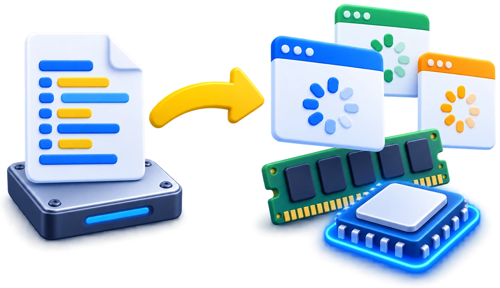
Un programa en ejecución. El programa es un archivo guardado en el disco; el proceso es ese programa cargado en memoria, con sus datos, su estado y su turno de procesador.
●Cada vez que ejecutas un programa se crea un proceso. El mismo programa abierto dos veces son dos procesos.
●Un programa puede crear varios procesos: el navegador abre uno por pestaña. Con Mayús + Esc en Chrome o Edge se ven todos.
●El sistema operativo los identifica, les da memoria, les da turno en la CPU y los elimina al terminar: es la gestión de procesos.
Procesos y planificación
Tres estados y cuatro transiciones
1Ejecución → bloqueado. El proceso pide algo y tiene que esperar: leer del disco, una tecla, un dato de la red. Es la única que inicia el propio proceso.
2Ejecución → listo. El sistema le quita la CPU sin que haya terminado: agotó su tiempo o llegó uno más urgente.
3Listo → ejecución. El planificador lo elige y entra en la CPU.
4Bloqueado → listo. Llega lo que esperaba. Va al final de la cola de listos: nunca directo a ejecución, porque la CPU estará ocupada.
Figura 2.12. Estados de un proceso y sus transiciones. Con un solo núcleo, solo un proceso puede estar en ejecución; los demás están listos o bloqueados. Elaboración propia.
Comprueba lo aprendido
Un proceso bloqueado recibe el dato del disco que esperaba. ¿A qué estado pasa?
Selecciona una opción.
Procesos y planificación
La ficha de cada proceso: el bloque de control (PCB)
Dato del PCB
Para qué sirve
Dónde lo ves
PID
Número entero único que identifica al proceso mientras vive.
Administrador de tareas › Detalles; en Linux, ps
Estado
Listo, en ejecución o bloqueado.
Columna Estado ("En ejecución", "Suspendido")
Prioridad
Quién pasa antes cuando varios quieren la CPU.
Detalles › botón derecho › Establecer prioridad
Registros y contador de programa
Por dónde iba: se guardan al salir de la CPU y se restauran al volver.
No se ven: son el cambio de contexto
Memoria asignada
Qué zonas de memoria son suyas.
Columna Memoria
Recursos abiertos
Archivos, conexiones de red, dispositivos que está usando.
Monitor de recursos › Identificadores
Propietario y tiempo de CPU
Qué usuario lo lanzó y cuánto procesador lleva consumido.
Columnas Nombre de usuario y Tiempo de CPU
Procesos del sistema y de usuario
Del sistema: arrancan con el equipo y dan servicio sin ventana. Son los servicios (o demonios en Linux): cola de impresión, Windows Update, Defender, el servidor SSH. Se administran en services.msc y con systemd.
De usuario: los que lanzas tú. En un sistema multiusuario conviven procesos de varias personas.
Dos servicios especiales: arranque, que deja el sistema listo para los usuarios, y parada, que lo deja de modo que pueda volver a arrancar sin problemas.
Tabla 2.7. Contenido del bloque de control del proceso. Cada sistema operativo guarda más o menos campos, pero el PID, el estado, la prioridad y los registros están en todos.
Procesos y planificación
El planificador: quién entra en la CPU
En un sistema multitarea los procesos parecen ejecutarse a la vez, pero cada núcleo solo puede atender a uno. El planificador (scheduler) es el proceso del sistema que decide cuál de los listos pasa a ejecutarse. A la forma de repartir la CPU se le llama planificación.
Tres plazos: a largo plazo decide qué trabajos se admiten; a medio plazo, cuáles se sacan a disco cuando falta memoria; a corto plazo (el dispatcher), quién entra ahora en la CPU. Es este último el que estudiamos.
Lo que intenta el planificador
●Que la CPU no esté nunca parada mientras haya algo que hacer.
●Que el tiempo de respuesta de cada proceso sea el menor posible.
●Que ningún proceso espere para siempre (inanición), aunque haya otros más prioritarios.
●Tratar a todos por igual, salvo que tengan distinta prioridad.
Envejecimiento (aging): cuanto más tiempo lleva un proceso esperando, más prioridad gana. Así los muy prioritarios no dejan sin turno a los demás.
Procesos y planificación
Planificación expulsiva y no expulsiva
No expulsiva · non-preemptive
El proceso deja la CPU solo cuando termina o se bloquea esperando un recurso. Nadie se la quita.
Algoritmos: FIFO, SJF, prioridades no expulsivo.
Expulsiva · preemptive
El sistema puede desalojar al proceso sin que haya terminado, y lo devuelve a la cola de listos. Es la multitarea apropiativa de la sección 2.3.
Desalojar un proceso para que entre otro: guardar el PCB del que sale (registros, contador de programa) y cargar el del que entra, para que siga exactamente donde lo dejó. Es caro: microsegundos sin trabajo útil y las cachés del procesador llenas de datos del proceso anterior. Cuantos más cambios, menos rendimiento: por eso el quantum de Round Robin no puede ser minúsculo.
Procesos y planificación
Los datos de un problema de planificación
Dato
Qué es
Cómo se calcula
Tiempo de llegada
Instante en que el proceso entra en el sistema.
Dato de entrada
Tiempo de ejecución
Cuánta CPU necesita en total para terminar.
Dato de entrada
Prioridad
Solo en los algoritmos por prioridades. 1 es la más alta.
Dato de entrada
Tiempo de respuesta
Desde que llega hasta que termina. También "de retorno".
fin − llegada
Tiempo de espera
Lo que ha pasado en la cola de listos sin la CPU.
respuesta − ejecución
Tiempos medios
Media de espera y de respuesta de todos los procesos. Sirven para comparar algoritmos.
suma / n.º de procesos
Tabla 2.8. Entradas y salidas de un problema de planificación. Las salidas se leen del cronograma.
El cronograma (diagrama de Gantt)
Una fila por proceso y una casilla por unidad de tiempo. Se colorea cuando el proceso está en la CPU y se deja en gris cuando espera. Siempre se dibuja primero y de él se leen el fin de cada proceso y, con las dos restas, sus tiempos.
El ejemplo de los seis simuladores
Proceso
Llegada
Ejecución
Prioridad
P1
0
7
4
P2
2
4
2
P3
3
3
1
P4
5
2
3
En cada simulador puedes cambiar los datos, añadir procesos o pedir otros al azar, y avanzar el tiempo paso a paso.
Simulador
FIFO: primero en llegar
No expulsivo. Entran por orden de llegada y cada uno conserva la CPU hasta terminar. También se llama FCFS (first come, first served).
Simulador
SJF: primero el más corto
No expulsivo. Cuando la CPU queda libre entra el de menor tiempo de ejecución de los que esperan; si empatan, el que llegó antes. Favorece a los cortos.
Simulador
SRTF: el que menos le queda
Expulsivo. Entra siempre el que menos tiempo tiene pendiente, aunque haya que desalojar al que está en la CPU. Si empatan, sigue el que está.
Simulador
Prioridades no expulsivo
La prioridad 1 es la más alta. Cuando la CPU queda libre entra el de mayor prioridad de los que esperan; si empatan, el que llegó antes.
Simulador
Prioridades expulsivo
La prioridad 1 es la más alta. Si llega un proceso más prioritario que el que está en la CPU, lo desaloja. Si empatan, sigue el que está.
Simulador
Round Robin, quantum 2
Expulsivo. Cada proceso usa la CPU como mucho un quantum y vuelve al final de la cola. Si en el mismo instante llega uno y otro agota su quantum, entra antes en la cola el que llega.
Procesos y planificación
Los seis algoritmos con el mismo ejemplo
Algoritmo
Expulsivo
Orden de ejecución
Espera media
Respuesta media
Favorece a
FIFO
No
P1 P2 P3 P4
22/4 = 5,5
38/4 = 9,5
Al que llega primero. Un largo hace esperar a todos.
SJF
No
P1 P4 P3 P2
18/4 = 4,5
34/4 = 8,5
A los cortos. Hay que conocer la duración de antemano.
SRTF
Sí
P1 P2 P4 P3 P1
15/4 = 3,75
31/4 = 7,75
A los cortos, aún más. Las mejores medias; el largo paga.
Prioridades no expulsivo
No
P1 P3 P2 P4
21/4 = 5,25
37/4 = 9,25
A los importantes, cuando la CPU queda libre.
Prioridades expulsivo
Sí
P1 P2 P3 P2 P4 P1
16/4 = 4
32/4 = 8
A los importantes, en cuanto llegan. Tiempo real.
Round Robin (q = 2)
Sí
P1 P2 P1 P3 P2 P4 P1 P3 P1
27/4 = 6,75
43/4 = 10,75
A nadie: todos avanzan desde el principio. Tiempo compartido.
Tabla 2.9. Los seis algoritmos con los procesos P1 (0, 7), P2 (2, 4), P3 (3, 3) y P4 (5, 2) y prioridades 4, 2, 1, 3. Las mejores medias no son siempre lo mejor: un usuario delante de la pantalla prefiere que todo avance (Round Robin) a que un proceso largo se quede parado.
En los sistemas reales. Windows: prioridades expulsivas con 32 niveles y quantum, y sube la prioridad de la ventana activa. Linux: reparto justo por prioridades (planificador EEVDF desde el núcleo 6.6). Tiempo real: prioridades estrictas. Ninguno usa FIFO o SJF puros, pero son la base de todos.
Ejercicio interactivo
Resuelve tú el cronograma
Cómo se hace
Resuelve tú el cronograma
Elige el algoritmo. Pulsa cada casilla del cronograma: con un clic, el proceso está en la CPU (su color); con dos, espera en la cola (raya gris); con tres, vuelve a quedar vacía. Después, escribe la espera y la respuesta de cada proceso y las dos medias.
en ejecuciónespera en la colavacía
Las casillas grises de un proceso son su tiempo de espera. Respuesta = fin − llegada; espera = respuesta − ejecución.
Reglas de empate: FIFO. En SRTF y prioridades expulsivo, si empatan, sigue el que está. En Round Robin, el que llega entra en la cola antes que el que agota su quantum.
Pista rellena la siguiente casilla y explica por qué. Resolver lo completa todo. Las dos ponen a cero tu racha: en la práctica 2.6 hay que llegar a diez seguidos en cada algoritmo.
Pregunta a la clase
¿Qué pasa si el quantum vale 1? ¿Y si vale 100?
Pruébalo primero en el simulador de Round Robin con q = 2 y q = 3, y piensa qué pasaría en los extremos.
q = 1
La CPU cambia de proceso en cada unidad de tiempo. Cada cambio de contexto cuesta tiempo real (guardar y cargar el PCB, vaciar cachés): el sistema pasa más tiempo cambiando que ejecutando.
q = 100
Ningún proceso agota su quantum: el primero que entra termina antes de ceder. Round Robin se convierte en FIFO y el sistema deja de responder mientras un proceso largo ocupa la CPU.
Los sistemas reales usan quantums de milisegundos y los ajustan sobre la marcha: Windows da un quantum más largo al programa de la ventana activa; Linux lo calcula según cuántos procesos compiten.
Comprueba lo aprendido
¿Cuál de estos algoritmos es expulsivo?
Selecciona una opción.
Procesos y planificación
Hilos, sincronización e interbloqueo
Hilos (threads, subprocesos)
Un proceso tiene al menos un hilo. Varios hilos del mismo proceso comparten su memoria y pueden ejecutarse a la vez en distintos núcleos. Un juego: un hilo dibuja, otro calcula la física, otro reproduce el sonido. En el Administrador de tareas, columna Subprocesos.
Sincronización
Dos hilos no pueden tocar el mismo dato a la vez: dos cajeros que restan del mismo saldo lo dejan mal. El sistema ofrece cerrojos: uno entra, el otro espera.
Interbloqueo (deadlock)
A tiene el recurso 1 y espera el 2. B tiene el 2 y espera el 1. Ninguno soltará lo suyo hasta conseguir lo del otro: los dos esperan para siempre.
Como dos coches de frente en un puente de un carril. El sistema lo evita (obliga a pedir los recursos en orden) o lo detecta y mata a uno. Tú lo ves como un programa que "no responde".
Pregunta a la clase
¿Cuántos procesos e hilos tiene ahora mismo tu ordenador?
Ctrl + Mayús + Esc › Rendimiento › CPU. Mira abajo: procesos, subprocesos, identificadores. ¿Por qué hay cientos si solo tienes dos ventanas abiertas?
Lo normal en un Windows 11 con el navegador abierto
150-300
procesos
2000-5000
subprocesos (hilos)
1-5 %
de CPU en reposo
●La mayoría son servicios del sistema y procesos en segundo plano: actualizaciones, antivirus, red, sonido, impresión.
●El navegador crea un proceso por pestaña y por extensión, para que una pestaña colgada no se lleve a las demás.
●Casi todos están bloqueados o listos, esperando algo. Solo unos pocos usan la CPU de verdad: por eso el porcentaje es tan bajo.
Práctica
Planificación de procesos
En casa: llega a diez aciertos seguidos en el ejercicio de planificación con cada uno de los seis algoritmos. Pista y Resolver ponen la racha a cero. No se entrega nada.
En clase: examen práctico en papel con una hoja generada con una semilla (seed) nueva, igual que las de casa: cronogramas de cualquiera de los seis algoritmos, con sus tiempos de espera, de respuesta y las medias.
Hoja de ejercicios por semilla
Abre hoja.html, escribe una semilla (seed) y genera la hoja: la misma semilla da siempre la misma hoja, y cada semilla nueva, otra distinta. Haz las que quieras en papel, dibuja los cronogramas y compruébalas con el solucionario. En clase, la semilla será otra.
Sin material. Los algoritmos y las dos restas (respuesta = fin − llegada; espera = respuesta − ejecución) hay que saberlos. Se puntúa el cronograma y los cálculos a la vista.
Gestión de memoria
La jerarquía de almacenamiento
Cuanto más arriba, más rápido, más caro y más pequeño. Cada nivel guarda copias de lo más usado del nivel de abajo.
●Caché: si se acaba de usar un dato, es probable que se vuelva a usar él o sus vecinos (localidad). Por eso se copian en un nivel más rápido.
●La caché de disco es una zona de la RAM con lo último leído o escrito del disco: por eso la segunda vez que abres un programa tarda menos.
●La memoria auxiliar (SSD, disco duro, pendrive, nube) es la única que conserva los datos al apagar.
Figura 2.13. Jerarquía de almacenamiento con tiempos de acceso y tamaños orientativos de un PC de 2026. Elaboración propia.
Gestión de memoria
Qué hace el sistema con la memoria
Un proceso tiene que estar en la memoria principal para ejecutarse. El sistema operativo hace cuatro cosas con ella:
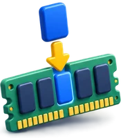
Asignar una zona a cada proceso cuando se crea.
Proteger esa zona: ningún otro proceso puede leerla ni escribirla.
Compartir cuando conviene: dos procesos que usan la misma biblioteca (una DLL de Windows, un .so de Linux) comparten una sola copia. Por eso diez pestañas del navegador no ocupan diez veces más.
Liberar la memoria cuando el proceso termina.
Monoprogramación
Sistema operativo
Un solo proceso
Fácil: una zona para la parte residente del sistema y el resto para el único proceso. Cuando termina, entra otro.
Multiprogramación
SO
P1
P2
P3
libre
Hay que repartir la memoria entre varios procesos a la vez, en particiones. Aparecen los problemas de esta sección: proteger, aprovechar los huecos y qué hacer cuando no cabe.
Gestión de memoria
Protección: cada proceso en su sitio
Cada proceso tiene su propia zona de memoria. Si intenta leer o escribir fuera de ella, el procesador avisa y el sistema operativo cierra el programa.
Cómo lo ves tú
Windows
juego.exe ha dejado de funcionar.
Linux Segmentation fault
Los dos mensajes dicen lo mismo: la protección ha funcionado. Cae el programa, no el sistema.
Gestión de memoria · la excepción
Cambiar la memoria de un juego
Un programa con permisos de administrador puede pedir al sistema leer y escribir la memoria de otro proceso. Así trabajan los depuradores y los programas de trampas, como Cheat Engine. El simulador imita el juego Cookie Clicker.
1Pulsa la galleta.
2Mayús + Esc: el ID de proceso de la pestaña, en decimal.
3Pásalo a hexadecimal y ábrelo con el botón del monitor.
4Value Type: Double y First Scan con las galletas que ves.
5Pulsa la galleta y Next Scan, hasta que no bajen.
6Selecciónalas, flecha roja y doble clic en su Value.
Por eso dar permisos de administrador a un programa es darle acceso a todo. En los juegos en línea, un sistema anti-trampas vigila quién abre su memoria y expulsa al jugador.
Gestión de memoria
Dos formas de repartir la memoria
Paginación · tamaño fijo
El proceso se parte en páginas y la RAM en marcos, todos del mismo tamaño (4 KiB). Cada página va a cualquier marco libre; la tabla de páginas apunta dónde está cada una.
Fragmentación interna. Solo se pierde el final de la última página (rayado). Lo usan Windows 11, Linux y macOS.
Segmentación · tamaño variable
El proceso se parte en segmentos, cada uno del tamaño que necesita: el código, los datos… Cada segmento va entero a un hueco libre donde quepa.
Fragmentación externa. Hay 15 KiB libres, pero en huecos sueltos, y el código no cabe en ninguno.
Era la de MS-DOS. Las particiones variables funcionan igual, con el proceso entero en un solo trozo.
Figura 2.14. Paginación y segmentación: el proceso a la izquierda y la RAM a la derecha. Elaboración propia.
Gestión de memoria
¿Y si no cabe? Intercambio y memoria virtual
Cuando la RAM no llega, el sistema usa una parte del disco como si fuera memoria.
●Intercambio (swapping): un proceso que está esperando se copia entero al disco y deja su sitio a otro. Cuando le toca, vuelve a la RAM, y no tiene por qué ir al mismo sitio: eso es la reubicación.
●Memoria virtual: el proceso no tiene que estar entero en la RAM. Solo están las páginas que usa; el resto espera en el disco. Cada proceso cree tener toda la memoria para él.
●Fallo de página: el proceso usa una página que está en el disco. El sistema la trae a un marco libre (si no hay ninguno, antes saca otra al disco).
Dónde está ese disco. Windows: C:\pagefile.sys (y swapfile.sys), ocultos. Linux: una partición swap o el archivo /swapfile.
El precio. El disco es miles de veces más lento que la RAM. Si el sistema intercambia sin parar, el equipo se arrastra. La solución barata es más RAM.
Comprueba lo aprendido
¿Dónde guarda Windows la memoria de intercambio?
Selecciona una opción.
Gestión de entrada/salida
Dispositivos, controladores y drivers
El sistema operativo gestiona los periféricos y las memorias auxiliares para que el usuario y los programas los usen sin conocer sus detalles. Tres piezas:
●El dispositivo: el teclado, el disco, la tarjeta de red, la impresora.
●El controlador de E/S (hardware): el circuito que lo gobierna, en la placa, en una tarjeta o dentro del propio aparato. El sistema le da órdenes y le lee el estado a través de direcciones de E/S.
●El driver (software): la parte del sistema operativo que sabe hablar con ese controlador concreto. También se le llama "controlador", de ahí la confusión.
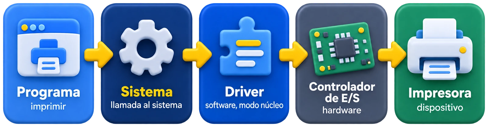
Direcciones de E/S: registros donde el driver escribe órdenes y lee el estado.
Dónde lo ves. Administrador de dispositivos: cada dispositivo y, en Propiedades › Controlador, su driver y su versión. Windows Update y Ubuntu traen drivers para casi todo; el resto lo pone el fabricante.
Por qué importa. El driver corre en modo núcleo: un driver con errores tumba el sistema entero. La mayoría de las pantallas azules son drivers.
Gestión de entrada/salida
Tres formas de controlar la entrada/salida
Por programa · sondeo
El procesador pregunta una y otra vez al controlador: "¿has terminado?". Mientras, no hace otra cosa.
Sencillo de programar. Desperdicia CPU esperando a un dispositivo lento. Solo en aparatos muy simples.
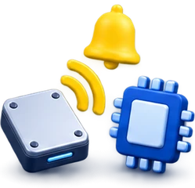
Por interrupciones · IRQ
El procesador se olvida del dispositivo. Cuando este tiene algo, envía una señal, la petición de interrupción (IRQ). El procesador para, ejecuta la rutina de atención del driver y vuelve a lo suyo.
Teclado, ratón, red: cada tecla es una interrupción. El procesador atiende miles por segundo sin problema.
Acceso directo a memoria · DMA
Para transferir mucho: el controlador lee y escribe la memoria por su cuenta, sin pasar por el procesador, y solo interrumpe al terminar.
Discos, tarjeta gráfica, sonido, red: los que más datos mueven. Hoy lo usan todos; el procesador queda libre.
Verlo en tu equipo. Administrador de dispositivos › Ver › Recursos por tipo › Petición de interrupción (IRQ): la lista de dispositivos y el número de interrupción de cada uno.
Gestión de entrada/salida
Que lo lento no frene lo rápido
Caching caché
Guarda cerca lo que se usa mucho, para no ir a buscarlo cada vez.
El ordenador guarda una copia de lo que acabas de usar en un sitio más rápido: la memoria RAM, la caché del procesador o una carpeta del navegador. Si lo vuelves a pedir, lo coge de ahí y no espera al disco ni a internet. Funciona porque repetimos mucho: las mismas webs, los mismos programas, los mismos archivos.
Ejemplo. Una web carga al momento la segunda vez: el navegador guardó sus imágenes.
Buffering buffer
Una reserva entre quien envía y quien recibe, para que no tengan que ir al mismo ritmo.
La red no llega siempre igual: a ratos va rápida y a ratos se para. El vídeo, en cambio, necesita imágenes sin pausas. El buffer es una zona de memoria donde se van juntando los datos que llegan, y de ahí el reproductor los va sacando a su ritmo. Si la red se para un momento, tira de lo que ya tiene guardado.
Ejemplo. YouTube descarga por delante (la barra gris): si la red da un bache, el vídeo no se corta.
Spooling cola en el disco
Pone el trabajo en una cola y el programa sigue: no espera al aparato lento.
La impresora es lentísima comparada con el ordenador. En vez de esperarla, el documento se guarda en una cola en el disco, y un servicio del sistema se lo va pasando a la impresora poco a poco. Así sigues trabajando, y puedes mandar varios documentos seguidos: se imprimen por orden de llegada.
Ejemplo. Mandas imprimir y sigues usando Word mientras la impresora saca las hojas.
Gestión de entrada/salida
El disco no atiende por orden de llegada
Igual que con la CPU, el sistema planifica el disco: las peticiones se ponen en cola y se atienden en el orden que más conviene.
●En un disco duro, lo que más tarda es mover el cabezal de una pista a otra.
●Por eso se atienden por posición: el cabezal recorre las pistas en un sentido y luego vuelve, como un ascensor que para en las plantas en orden. Es el algoritmo del ascensor.
●Un SSD no tiene cabezal: el orden importa mucho menos.
Figura 2.15. Las mismas lecturas en dos órdenes, a la misma velocidad. Animación de elaboración propia.
Pregunta a la clase
¿Por qué el ratón no consume CPU aunque lo muevas sin parar?
Abre el Administrador de tareas y agita el ratón. La CPU apenas se mueve. Y sin embargo el procesador se entera de cada milímetro.
Porque funciona por interrupciones
●El sensor del ratón envía su posición entre 125 y 1000 veces por segundo. Cada envío es una interrupción.
●El procesador la atiende en microsegundos: lee dos números, actualiza el puntero y vuelve a lo que estaba haciendo. El resto del tiempo ni se acuerda del ratón.
●Si funcionara por sondeo, un núcleo entero estaría preguntando "¿te has movido?" millones de veces por segundo.
En cambio, un vídeo en 4K sí gasta CPU o GPU: hay que descomprimir millones de píxeles por segundo. Eso no es entrada/salida, es cálculo. La interrupción es una de las señales del bus de control que viste en la UT1.
Comprueba lo aprendido
¿Qué técnica evita que la impresora bloquee al programa que imprime?
Selecciona una opción.
Concepto clave
Archivo y directorio
Un archivo (o fichero) es la unidad lógica de almacenamiento: un conjunto de información con nombre. Un directorio (o carpeta) es un archivo especial que contiene la lista de otros archivos y directorios.
Ruta absoluta: desde la raíz (C:\Users\ana\Documentos\examen.docx). Ruta relativa: desde donde estás (Documentos\examen.docx). En Linux la barra va al revés y todo, hasta el pendrive, cuelga de /.
Archivos y sistemas de archivos
Nombre, extensión y comodines
La extensión: lo que va tras el último punto
Dice de qué tipo es el archivo y con qué programa se abre: examen.docx, foto.jpg, instalar.exe. Windows la oculta por defecto; Linux ni la necesita: mira el contenido.
El truco de siempre. Con la extensión oculta, factura.pdf.exe se ve como factura.pdf y el icono se puede falsificar. Activa Ver › Mostrar › Extensiones de nombre de archivo. Es el apartado 12 de la práctica 2.12.
Mayúsculas NTFS y FAT no distinguen: Foto.jpg y foto.jpg son el mismo. ext4 sí distingue.
Prohibidos en Windows \ / : * ? " < > | · En Linux, solo la barra.
Comodines: nombrar muchos archivos de una vez
*
Cualquier cadena, incluso vacía
*.jpg · informe*.docx
?
Un solo carácter, el que sea
foto?.png · tema-0?.pdf
[ ]
Uno de los caracteres entre corchetes (en Linux)
foto[1-3].png
Sirven en la búsqueda del Explorador, en la terminal (dir *.jpg, ls *.jpg) y en los scripts. *.* son todos los archivos.
Archivos y sistemas de archivos
Cómo se organiza el disco por dentro
●El disco se reparte en bloques (o clústeres) de 4 KiB. Un archivo ocupa bloques enteros: por eso el tamaño en disco es mayor que el tamaño.
●Una tabla apunta qué bloques tiene cada archivo y cuáles están libres. Se llama FAT en FAT32, MFT en NTFS e inodos en ext4.
●Los bloques de un archivo no tienen por qué ir seguidos: es la fragmentación.
●Borrar solo cambia la tabla: el contenido sigue ahí hasta que se escribe encima. Por eso se pueden recuperar archivos borrados.
Figura 2.16. Archivos repartidos en bloques y la tabla que los apunta. Elaboración propia.
Archivos y sistemas de archivos
Atributos: lo que el sistema sabe de cada archivo
Atributo
Qué es
Nombre y tipo
El nombre con su extensión y el tipo que el sistema deduce de ella.
Tamaño y tamaño en disco
Los bytes que tiene y los bloques enteros que ocupa: el segundo es siempre igual o mayor.
Fechas
Creación, última modificación y último acceso.
Propietario
El usuario dueño del archivo; en Linux, también un grupo.
Permisos
Quién puede leer, escribir y ejecutar (siguiente diapositiva).
Atributos de Windows
R solo lectura, H oculto, S de sistema, A modificado desde la última copia. Orden attrib.
Tabla 2.10. Atributos de un archivo. Un directorio tiene los mismos, salvo que su "contenido" es la lista de lo que hay dentro.
Propiedades: examen.docx
Tipo de archivo:Documento de Microsoft Word (.docx)Se abre con:WordUbicación:C:\Users\ana\DocumentosTamaño:47,0 KB (48120 bytes)Tamaño en disco:48,0 KB (49152 bytes)Creado:viernes, 12 de septiembre de 2026, 10:04Modificado:viernes, 12 de septiembre de 2026, 11:37Último acceso:hoy, 8:52Atributos:☐ Solo lectura ☐ Oculto
ana@aula:~$ ls -l Documentos/examen.docx -rw-r--r-- 1 ana ana 48120 sep 12 11:37 Documentos/examen.docx
Maquetas de elaboración propia. Fíjate: el tamaño en disco es algo mayor que el tamaño. En Linux, todo en una línea.
Archivos y sistemas de archivos
Permisos: quién puede hacer qué
Cada archivo y cada directorio dice qué puede hacer con él cada usuario. El sistema operativo lo comprueba en cada llamada al sistema: abrir, escribir, borrar. Si no tienes permiso: "acceso denegado".
Windows (NTFS): listas de control de acceso
Propiedades › Seguridad · examen.docx
Nombres de grupos o usuarios:
SYSTEM · Administradores · ana · Usuarios
Permisos de ana
Permitir
Denegar
Control total
☑
☐
Modificar
☑
☐
Lectura y ejecución
☑
☐
Lectura
☑
☐
Escritura
☑
☐
Para cada usuario o grupo, permitir o denegar cada acción. Se heredan de la carpeta padre. Maqueta de elaboración propia.
Linux: rwx para tres sujetos
-rw-r--r-- 1 ana ana 48120 examen.docx drwxr-x--- 2 ana ana 4096 Documentos
propietario ana: leer y escribir
grupo ana: solo leer
otros todos los demás: solo leer
Tres permisos, r leer, w escribir y x ejecutar, para tres sujetos. En un directorio, x significa poder entrar. Se cambian con chmod.
Los dos modelos hacen lo mismo con distinto detalle: el de Windows es más fino; el de Linux, más simple de leer.
Archivos y sistemas de archivos
Operaciones con archivos y directorios
Operación
Qué hace
Crear
Hacer un archivo o una carpeta nuevos.
Abrir y cerrar
Antes y después de usarlo. Al abrir, se miran los permisos.
Leer
Traer su contenido a la memoria.
Escribir
Cambiar o añadir contenido.
Copiar y mover
Duplicarlo, o cambiarlo de sitio o de nombre.
Borrar
Quitarlo de la tabla: sus bloques quedan libres.
Consultar atributos
Ver su tamaño, sus fechas y sus permisos.
Dos cosas que un técnico tiene claras
Enviar a la papelera no es borrar. El archivo solo cambia de carpeta y sigue ocupando sitio hasta que la vacías.
Borrar no destruye. El contenido sigue en el disco hasta que otro archivo se escribe encima. Por eso se puede recuperar.
Tabla 2.11. Operaciones más comunes. Valen igual para archivos y para directorios.
Archivos y sistemas de archivos
Los sistemas de archivos que te vas a encontrar
Sistema
De quién
Archivo máximo
Journaling
Permisos
Dónde se usa
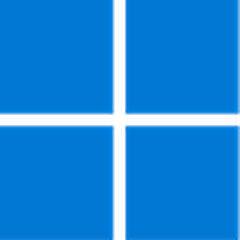
FAT16
Microsoft
2 GB
✗
✗
Muy antiguo
FAT32
Microsoft
4 GiB
✗
✗
Pendrives: lo lee todo
exFAT
Microsoft
Sin límite práctico
✗
✗
Pendrives y discos externos grandes
NTFS
Microsoft
Sin límite práctico
✓
✓
El disco de Windows
ext2 · ext3
Linux
2 TiB
✗ · ✓
✓
Linux antiguo (ext3 añadió el journaling)
ext4
Linux
16 TiB
✓
✓
El disco de Ubuntu
Btrfs · XFS
Linux
Sin límite práctico
✓
✓
Otros Linux y servidores
APFS
Apple
Sin límite práctico
✓
✓
Mac, iPhone y iPad
ISO 9660 · UDF
Norma ISO
4 GiB · sin límite
✗
✗
CD, DVD y Blu-ray
Tabla 2.12. Sistemas de archivos actuales. Un pendrive "de 64 GB" en FAT32 no admite un archivo de 5 GiB: no es el espacio, es el sistema de archivos.
Archivos y sistemas de archivos
Quién lee qué: Windows, Linux y macOS
Sistema de archivos
Windows 11
Linux (Ubuntu)
macOS
Tele, coche, consola, cámara
NTFS
lee y escribe
lee y escribe
solo lee
a veces lee
FAT32
lee y escribe
lee y escribe
lee y escribe
todos
exFAT
lee y escribe
lee y escribe
lee y escribe
casi todos los modernos
ext4
no (solo con WSL o programas)
lee y escribe
no
no
APFS
no
no (solo con programas)
lee y escribe
no
Tabla 2.13. Compatibilidad sin instalar nada extra. Linux lee NTFS con su propio driver desde 2021; macOS lo lee pero no lo escribe; Windows no ve una partición ext4 salvo que uses el subsistema de Linux (WSL).
Regla práctica. Para el disco del sistema, el nativo de cada uno: NTFS, ext4, APFS. Para un disco o pendrive que va a viajar entre sistemas y aparatos, exFAT (o FAT32 si son archivos pequeños y aparatos antiguos).
Archivos y sistemas de archivos
Journaling: si se va la luz
●Guardar un archivo son varios pasos: escribir sus bloques y apuntarlos en la tabla.
●Si se va la luz a mitad, el disco queda a medias: bloques que no son de nadie.
●Transacción: los pasos se hacen todos o ninguno.
●Journaling (diario): antes de empezar, el sistema apunta lo que va a hacer. Si se corta, el diario dice qué quedó a medias.
El sistema tampoco escribe al instante: por eso, con un pendrive, usa «Quitar hardware con seguridad».
Archivos y sistemas de archivos
Cómo elegir el sistema de archivos
Pregúntate quién lo va a leer y qué vas a guardar.
Para…
Elige
Por qué
El disco donde se instala Windows
NTFS
Su sistema nativo
El disco donde se instala Ubuntu
ext4
Su sistema nativo
Un pendrive para la tele o el coche
FAT32
Lo lee todo
Un pendrive o disco con archivos de más de 4 GiB
exFAT
FAT32 no los admite
Un disco externo entre Windows y Mac
exFAT
Los dos pueden escribir
Pregunta a la clase
¿Qué sistemas de archivos tiene tu ordenador?
Botón derecho en Inicio › Administración de discos. Mira cuántas particiones tiene tu disco y qué sistema de archivos lleva cada una. ¿Por qué hay más de una?
Lo normal en un Windows 11
EFI 100 MB · FAT32
Windows (C:) 476 GB · NTFS
Recuperación 700 MB · NTFS
●EFI en FAT32: ahí están los cargadores de arranque. Es FAT32 porque es lo único que el firmware UEFI sabe leer seguro (sección 2.11).
●Windows en NTFS: el sistema, los programas y tus archivos.
●Recuperación en NTFS: el entorno que arranca cuando Windows no puede, para repararlo.
En Ubuntu, lsblk -f muestra lo mismo: la EFI en vfat y el sistema en ext4.
Comprueba lo aprendido
Un vídeo de 5 GiB no cabe en un pendrive de 64 GB casi vacío. ¿Qué sistema de archivos tiene el pendrive?
Selecciona una opción.
Seguridad
El sistema controla quién accede a qué
La seguridad es una función del sistema operativo, no un programa aparte: controla el acceso de usuarios y procesos a los recursos del equipo. Cuatro mecanismos que ya has visto o vas a ver:
●Cuentas y contraseñas: quién eres. Inicio de sesión, huella, PIN.
●Privilegios: qué puedes hacer. Administrador frente a usuario normal; el aviso de Windows que pide confirmación (UAC); sudo en Linux.
●Aislamiento de procesos y memoria (sección 2.7) y modos usuario y núcleo (2.4).
●Permisos de archivos y directorios (sección 2.9).
Control de cuentas de usuario
¿Quieres permitir que esta aplicación haga cambios en el dispositivo?
instalador.exe · Editor comprobado: desconocido
SíNo
Regla del técnico. Trabaja con una cuenta normal y usa la de administrador solo para lo que la necesite. Un programa malicioso que ejecutes tendrá tus permisos, no los del sistema. Ese aviso no es un trámite: es el sistema preguntando si de verdad quieres darle a ese programa acceso a todo.
Maqueta de elaboración propia.
Seguridad
Seguridad lógica y seguridad física
Lógica: con software
Contraseñas y PINCifrado del disco: BitLocker, LUKSAntivirus: DefenderCortafuegosActualizacionesCopias de seguridadPermisos y privilegios
Contra qué
Virus: se copia dentro de otros programas.
Gusano: se propaga solo por la red.
Troyano: parece útil y no lo es.
Spyware: espía lo que haces.
Ransomware: cifra tus archivos y pide rescate.
Phishing: te engaña para que des tu contraseña.
Física: el hardware y el edificio
SAI (alimentación ininterrumpida: una batería que aguanta los cortes y filtra las subidas), cámaras, control de acceso, extinción de incendios. Sin seguridad física no hay lógica: con el disco en la mano se salta todo, salvo el cifrado.
Centro de datos bajo la roca (Estocolmo). Foto: Holger.Ellgaard, CC BY-SA 3.0.
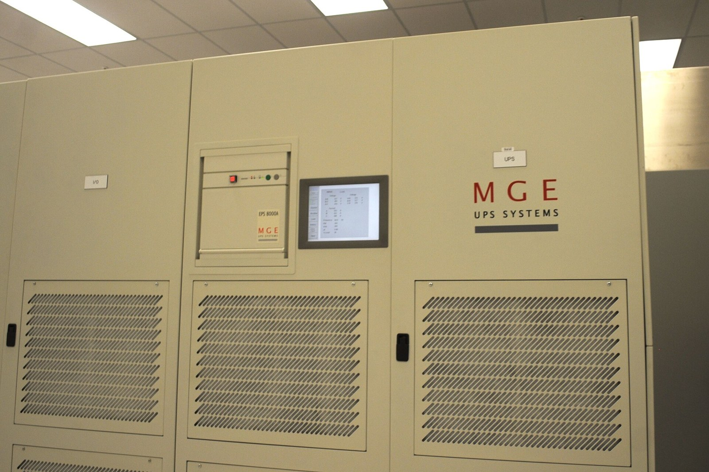
SAI de una sala de ordenadores. Foto: Derrick Coetzee, CC0.
Figura 2.17. Seguridad física: un centro de datos protegido y un SAI. Clic para ampliar.
Comprueba lo aprendido
¿Cuál de estos es una medida de seguridad física?
Selecciona una opción.
Arranque del ordenador
Qué pasa desde que pulsas el botón
Iniciar el sistema desde apagado se llama arranque (booting, de bootstrap: "levantarse tirando de las propias botas", porque el sistema se pone en marcha a sí mismo).
1Firmware. Al dar corriente, el procesador ejecuta el programa guardado en la memoria flash de la placa: la BIOS o, en los equipos actuales, la UEFI.
2POST (autocomprobación): memoria, procesador, teclado, gráfica. Si algo falla, pitidos o un mensaje.
3Dispositivo de arranque: se busca según el orden configurado: disco, USB, DVD, red.
4Cargador de arranque: con BIOS, el código del MBR (sector 0 del disco); con UEFI, el archivo del cargador en la partición EFI (Windows Boot Manager, GRUB).
5Núcleo: el cargador lleva el núcleo del sistema operativo a la memoria y le pasa el control.
6Servicios: el núcleo comprueba el sistema de archivos, crea sus estructuras y arranca los procesos del sistema.
7Inicio de sesión: el equipo espera al usuario.
Figura 2.18. La secuencia de arranque. Elaboración propia.
Arranque del ordenador
BIOS y MBR frente a UEFI y GPT
BIOS + MBR · el antiguo
UEFI + GPT · el actual
Pantalla
Modo texto, solo con el teclado.
Gráfica, con ratón.
Cómo arranca
Desde el primer sector del disco, el MBR.
Desde un programa de la partición EFI.
Particiones
Como máximo 4, en discos de hasta 2 TB.
Hasta 128, en discos enormes.
Seguridad
Ninguna: arranca lo que encuentre, también un virus.
Arranque seguro: solo arranca programas firmados. Windows 11 lo exige.
Tabla 2.14. Los dos modos de arranque. Los ordenadores actuales usan UEFI con GPT. Elaboración propia.
Arranque del ordenador
Entrar en el firmware, arrancar desde USB y apagar bien
Entrar en el firmware
Una tecla nada más encender: Supr, F2, F10, F12 o Esc, según la placa. El mensaje del arranque lo dice, aunque con un SSD casi no da tiempo a verlo.
Desde Windows 11: Configuración › Sistema › Recuperación › Inicio avanzado › Solucionar problemas › Opciones avanzadas › Configuración de firmware UEFI.
Arrancar desde USB
Se cambia el orden de arranque en el firmware, o se usa el menú de arranque de una sola vez (F12, F8 o Esc) y se elige el USB.
Con arranque seguro activo, el USB tiene que llevar un cargador firmado: los de Ubuntu y Windows lo llevan.
Apagar bien
Parada ordenada: el sistema cierra los procesos, vacía las cachés de disco y desmonta los sistemas de archivos. Apagar del botón se salta todo eso, y algún archivo puede quedar a medias.
Si algo va raro, mejor Reiniciar que Apagar y encender: Reiniciar arranca el sistema de cero.
Pregunta a la clase
¿Tu ordenador arranca con BIOS o con UEFI?
Míralo ahora: ¿modo de BIOS?, ¿arranque seguro?, ¿tabla de particiones MBR o GPT? ¿Alguien tiene un equipo en modo heredado?
Dónde se mira y qué sale en un equipo actual
Información del sistema (Windows + R › msinfo32)
Versión y fecha de BIOSAmerican Megatrends 2.21, 03/2025Modo de BIOSUEFIEstado de arranque seguroActivado
Y en Administración de discos › botón derecho en el disco › Propiedades › Volúmenes: Estilo de partición: GPT.
Si sale Heredado o MBR, es un equipo antiguo o instalado a la antigua: Windows 11 no se instala así. Anota tus tres datos: son los apartados 8 y 9 de la práctica 2.12. Maqueta de elaboración propia.
Comprueba lo aprendido
¿Cómo se llama la comprobación del hardware que se hace nada más encender?
Selecciona una opción.
Práctica
Radiografía de tu equipo
Una ficha de doce datos de tu ordenador, sacados con las herramientas del propio Windows. Se rellena en clase, en una sesión.
Entrega
La ficha, en clase
Cubre
Criterios g, h, i, l y m del RA1
Si el equipo del aula no te deja ver algo, anota qué y por qué: también es un dato.
#
Qué anotar
Dónde
Sección
1
Procesos, subprocesos e identificadores ahora mismo, y el tiempo de actividad
Administrador de tareas › Rendimiento › CPU
2.5
2
PID, prioridad y número de subprocesos de tu navegador
Administrador de tareas › Detalles (añadir columnas)
2.5
3
Un proceso del sistema y un servicio, y para qué sirve cada uno
Administrador de tareas › Servicios; services.msc
2.5
4
Memoria instalada, en uso, confirmada y en caché
Administrador de tareas › Rendimiento › Memoria
2.7
5
Tamaño de pagefile.sys y de hiberfil.sys
Explorador con archivos protegidos visibles, o dir /a C:\
2.7, 2.11
6
El número de IRQ de dos dispositivos (teclado, red…)
Administrador de dispositivos › Ver › Recursos por tipo
2.8
7
Particiones del disco: tamaño y sistema de archivos de cada una
Administración de discos
2.9
8
Estilo de partición del disco: MBR o GPT
Administración de discos › Propiedades del disco › Volúmenes
2.11
9
Modo de BIOS y estado del arranque seguro
msinfo32
2.11
10
De un archivo tuyo: tamaño, tamaño en disco, las tres fechas, solo lectura y oculto
Propiedades del archivo; attrib
2.9
11
Permisos de ese archivo: qué grupos aparecen y qué puede hacer "Usuarios"
Propiedades › Seguridad
2.9
12
¿Se ven las extensiones de archivo? Actívalas y anota un archivo cuya extensión no veías
Explorador › Ver › Mostrar › Extensiones de nombre de archivo
2.9
Antes del examen
Cómo practicar para el examen
Lo que se trae hecho de casa: racha de diez en el ejercicio de planificación con los seis algoritmos, y la hoja de planificación por semilla hecha en papel y comprobada con el solucionario.
Para la teoría
Las dos diapositivas de resumen del final: cada frase es una posible pregunta. Los quiz de cada sección y las preguntas a la clase, con sus respuestas.
Sin material en el examen. Los algoritmos, las reglas de empate y las dos restas hay que saberlos. En la parte práctica se puntúa el cronograma y las cuentas a la vista.
Los simuladores no son ejercicios: sirven para ver cada caso paso a paso las veces que haga falta.
Práctica
Test masivo en clase
Un test de toda la unidad en takataka.io. El banco de preguntas es grande y cada alumno recibe un subconjunto distinto, al azar: no hay dos tests iguales.
Obliga a haber leído la unidad entera, no solo la planificación que cae en la parte práctica, y a saber buscar rápido en las diapositivas.
Cubre sobre todo la teoría: procesos y estados, sistemas de archivos y journaling, memoria, entrada/salida y sistemas multiprocesador y distribuidos (criterios f, g, j, l, m y n del RA1), y repasa el resto de la unidad.
Práctica
Examen de la unidad
Es el 60 % de la nota de la unidad. Dos partes en la misma sesión, en papel. La fecha se anuncia en clase con al menos una semana.
Parte de teoría
Test y preguntas cortas de las secciones 2.1 a 2.11.
●Funciones, evolución, tipos y estructuras del sistema operativo; modo usuario y núcleo.
●Procesos, PCB, estados y transiciones; qué algoritmos son expulsivos y por qué.
●Paginación, fragmentación, memoria virtual; interrupciones y DMA; caché, buffer y spool.
●Atributos, permisos, sistemas de archivos y journaling; seguridad; arranque, BIOS y UEFI.
Criterios g, h, i, j, l, m y n del RA1.
Parte práctica
Cronogramas con sus tiempos de espera, de respuesta y las dos medias, generados con una semilla nueva como en la práctica 2.6. Cuántos y de qué algoritmo cambian en cada examen: puede salir cualquiera de los seis.
●FIFO, SJF y SRTF.
●Prioridades, no expulsivo y expulsivo (1 es la más alta).
●Round Robin con quantum 2.
✗Sin calculadora, sin apuntes, sin móvil.
✓Se puntúa el cronograma y los cálculos a la vista: un cronograma bien con una resta mal vale más que un número suelto.
Criterio f del RA1.
Unidad 2
Resumen (1 de 2): el sistema operativo y los procesos
01
El sistema operativo es software de base: gestiona los recursos, oculta el hardware, ejecuta programas, gestiona archivos y trata errores. Hoy, además, seguridad y energía.
05
Un proceso es un programa en ejecución, con su PCB (PID, estado, prioridad, registros). Tres estados: listo, en ejecución y bloqueado; cuatro transiciones, y solo la de bloqueo la inicia el proceso.
02
Etapas: sin sistema operativo, lotes, multiprogramación y tiempo compartido, ordenador personal, interfaz gráfica, internet y móvil. Tres familias: Unix y Linux (con sus distribuciones), Microsoft (rama NT) y Apple.
06
El planificador decide quién entra en la CPU. Expulsivo: puede quitársela (SRTF, prioridades expulsivo, Round Robin). No expulsivo: espera a que termine (FIFO, SJF, prioridades). El cambio de contexto es caro.
03
Cinco criterios: tiempo de respuesta (lotes, interactivo, tiempo real), usuarios, procesos, procesadores (simétrico o asimétrico) y red (centralizado, en red, distribuido).
07
Respuesta = fin − llegada; espera = respuesta − ejecución. El cronograma se dibuja primero. Empates: FIFO; en los expulsivos sigue el que está; en Round Robin, el que llega entra antes en la cola.
04
Partes: núcleo, controladores, servicios, interfaz y utilidades. Los programas piden el hardware con llamadas al sistema. Estructuras: monolítico (Linux), micronúcleo (QNX), híbrido (Windows, macOS); y capas, máquina virtual y cliente-servidor.
08
SRTF da las mejores medias y castiga a los largos; Round Robin las peores, pero todos avanzan: es el tiempo compartido. Un quantum minúsculo es todo cambios de contexto; uno enorme es FIFO.
Unidad 2
Resumen (2 de 2): memoria, entrada/salida, archivos y arranque
09
El sistema asigna, protege, comparte y libera memoria. Paginación: marcos y páginas de tamaño fijo (fragmentación interna). Segmentación: trozos variables (fragmentación externa).
13
Archivo y directorio en un árbol desde la raíz. Atributos: nombre, tamaño y tamaño en disco, fechas, propietario, permisos. Permisos: listas de control en Windows, rwx en Linux.
10
Intercambio a disco (pagefile.sys, swap), reubicación, compartición de bibliotecas y memoria virtual: cada proceso cree tener toda la memoria. Cuando se agota, el equipo se arrastra.
14
El disco va en bloques; FAT, la MFT de NTFS y los inodos de ext4 apuntan dónde está cada archivo. Borrar solo libera bloques. NTFS, ext4 y APFS tienen journaling; FAT32 y exFAT no.
11
Jerarquía: registros, caché, RAM, caché de disco, memoria auxiliar, red. Más arriba, más rápido, más caro y más pequeño.
15
Elegir el sistema de archivos: quién lo lee, archivos de más de 4 GiB, permisos, journaling. Nativo para el sistema (NTFS, ext4, APFS); exFAT o FAT32 para lo que viaja.
12
E/S por programa (sondeo), por interrupciones (IRQ y rutina de atención) o por DMA (el controlador escribe la memoria solo). Caché, buffer y spool para que lo lento no frene lo rápido. El disco duro ordena las lecturas (ascensor); un SSD no lo necesita.
16
Seguridad lógica (contraseñas, cifrado, antivirus, cortafuegos) y física (SAI, acceso). Arranque: firmware, POST, dispositivo, cargador (MBR o EFI), núcleo, servicios, sesión. UEFI + GPT + arranque seguro.
Para ampliar
Recursos de la unidad
Las herramientas que se usan en las prácticas, las fuentes de lo citado y los ejercicios de la unidad.
Herramientas de WindowsAdministrador de tareas (Ctrl + Mayús + Esc), Monitor de recursos, msinfo32, Administración de discos (diskmgmt.msc), Administrador de dispositivos y services.msc. Todo viene con el sistema.
Cheat EngineSolo desde su web oficial, cheatengine.org: las copias de otros sitios llevan sorpresas. Necesita permisos de administrador.
Versiones y distribucionesCiclo de vida de Windows en la documentación de Microsoft y de Ubuntu en ubuntu.com/about/release-cycle. Para comparar distribuciones, distrowatch.com. Logotipos y fotos de época: Wikimedia Commons, con su autor y licencia en cada imagen.
Datos citadosCuotas de sistemas operativos: StatCounter Global Stats. Fin de soporte de Windows 10 y requisitos de Windows 11: documentación de Microsoft. Normas ISO 9660 y UDF (ECMA-167) para los discos ópticos.
Para leer másLos manuales de Tanenbaum (Sistemas operativos modernos) y de Silberschatz (Fundamentos de sistemas operativos) son los de referencia en las universidades; esta unidad es su versión de grado medio.
Esta unidadLos seis simuladores y el ejercicio de planificación (2.5), el simulador de trampas en la memoria de un juego (2.7) y la hoja de planificación por semilla (hoja.html). Ctrl + P guarda las diapositivas en PDF.
Fin de la unidad 2
Dudas y preguntas
Cuatro fechas que se anuncian en clase: el examen práctico de planificación, la sesión de la radiografía de tu equipo, el test masivo y el examen.
![Cuatro capas apiladas. Usuario: escribe, hace clic, toca la pantalla, habla. Usa las aplicaciones: navegador, Word, juegos, WhatsApp, Spotify, el Explorador. Que piden servicios (llamadas al sistema) al sistema operativo: núcleo con procesos, memoria, archivos, entrada/salida y seguridad; controladores (drivers) de cada dispositivo e interfaz de usuario; Windows 11, Ubuntu, macOS, Android, iOS. Que gobierna con los controladores el hardware: procesador, memoria, discos, tarjeta gráfica, red, teclado, pantalla](img/ia/capas-sistema-operativo.webp)

![Pirámide de seis niveles, de arriba abajo: registros (menos de 1 ns); caché L1, L2, L3 dentro del procesador, de KiB a decenas de MiB (1-10 ns); memoria principal RAM, 8 a 64 GiB, se borra al apagar (unos 100 ns); caché de disco, parte de la RAM con lo último leído o escrito (unos 100 ns); memoria auxiliar: SSD, disco duro, pendrive, cientos de GB a varios TB, no se borra (µs en SSD, ms en HDD); red y nube, sin límite práctico, depende de la conexión. Hacia arriba, más rápido, más caro y más pequeño](img/ia/jerarquia-almacenamiento.webp)